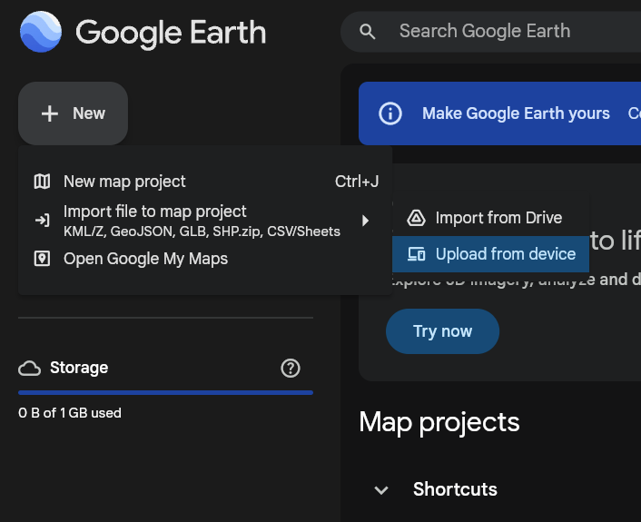
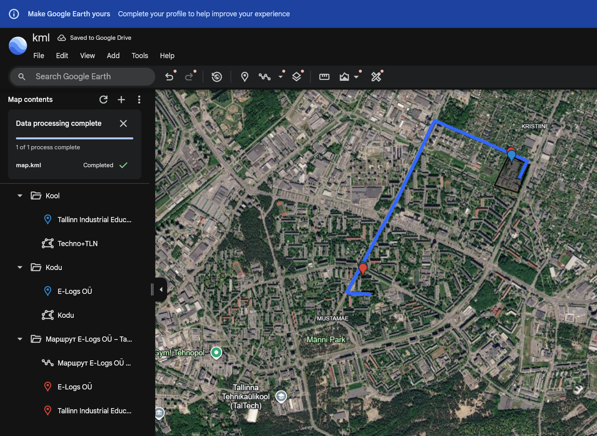

Google Earth ja sama KML-fail
Sama projekti KML-fail map.kml imporditi Google Earthi ja kontrolliti seal. Kõik faili geomeetrilised objektid olid Google Earthis nähtavad.
KML-failis olevad objektid
Kool
Tallinn Industrial Education Center
Maja
E-Logs OÜ ja maja kujutis
Marsruut
Marsruut E-Logs OÜ – Tallinn Industrial Education Center
Maja kujutis
Polügoon, mis näitab maja kuju.
Google Earthi lahendus kasutab olemasolevat KML-faili ega loo projekti jaoks eraldi andmeid.
Google Earthi avamiseks ja KML-faili importimiseks ava Google Earth .
KML-faili import ja tulemus Google Earthis

